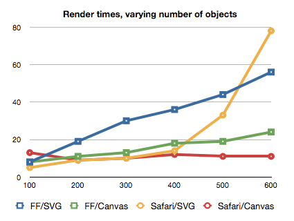
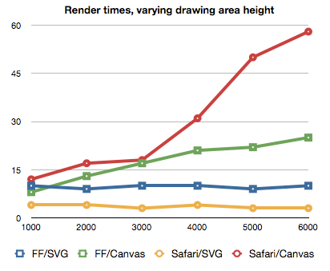
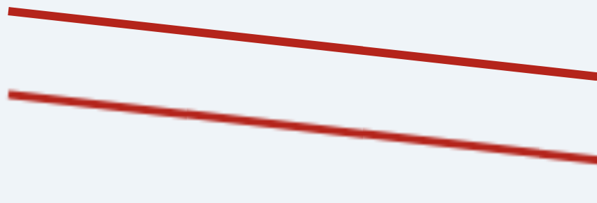
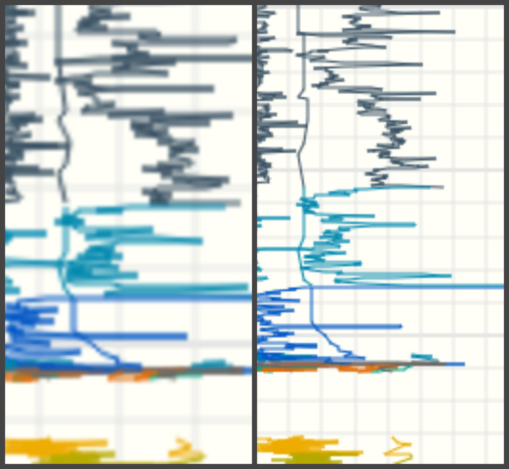

Canvas & SVG: работаем с графикой
В HTML5 представлено два элемента для работы с web графикой: Canvas и SVG. Две эти технологии достаточно сильно отличаются друг от друга. Важно знать об их преимуществах и недостатках, чтобы выбрать наиболее подходящую для конкретной задачи технологию. Элемент SVG позволяет создавать векторную графику, а элемент Canvas предназначен для создания растровых изображений. Элемент Сanvas также используется технологией WebGL для аппаратного ускорения 3D-графики..
SVG
Масштабируемая векторная графика (Scalable Vector Graphics — SVG) является языком разметки, расширенным из XML для описания двухмерной векторной графики.
Для создания изображения в векторной графике используются геометрические примитивы (точки, линии, кривые, многоугольники). С их помощью можно создавать масштабируемые изображения, которые не теряют в качестве при масштабировании.
SVG — технология рисования с хранением объектов в памяти (Retained mode graphics). Как и HTML, SVG имеет объектную модель документа (DOM). DOM в SVG, как и в HTML, имеется модель событий. Это значит, что при использовании этой технологии для реализации интерактивных действий (таких как управление мышью и т.п.) со стороны программиста требуется меньше усилий, поскольку события привязываются непосредственно к элементам DOM.
SVG имеет как обычные атрибуты, так и атрибуты представления. Ключевым моментом является то, что к атрибутам представления можно применять стили в соответствии с правилами использования стилей CSS. К примеру, для изменения цвета фигуры можно применять свойство fill.
Пример
<svg xmlns="http://www.w3.org/2000/svg" version="1.1" width="600" height="70">
line x1="5" y1="5" x2="500"y2="60" stroke="#b4241b" stroke-width="3"/>
</svg>
Пример
HTML:
<svg xmlns="http://www.w3.org/2000/svg" version="1.1" width="100" height="100">
circle cx="50" cy="50" r="40"y2="60" stroke="#b4241b" stroke-width="3"/>
</svg>CSS:
svg{fill:blue;}Canvas 2d
<Сanvas> — это HTML элемент, который используется для создания растровой графики при помощи JavaScript. Элемент <canvas> предоставляет удобный API для рисования 2D графики с помощью JavaScript.
В отличии от svg, canvas работает с растровой графикой. Это технология мгновенного рисования, она не хранит свои элементы в дереве DOM, следовательно нет никакого способа изменить существующий рисунок или реагировать на события. Это означает, что, когда потребуется новый кадр, необходимо будет отрисовать всю сцену заново.
Элемент <canvas> имеет только два атрибута — ширину и высоту. Если атрибуты высоты и ширины не установлены, то согласно спецификации html5 ширина элемента canvas будет равна 300 пикселям, а высота 150. При изменении этих атрибутов canvas очищается.
Также можно выставить размеры произвольно в CSS, но во время рендеринга изображение будет масштабироваться в соответствии с его размером и ориентацией. Это может привести к тому, что изображение будет выглядеть искаженным.
Для рисования в первую очередь необходимо получить доступ к контексту, который предоставляет API для создания графики. Контекст можно получить при помощи метода getContext() элемента canvas. В качестве первого параметра необходимо указать тип контекста, который мы хотим использовать. На данный момент большинство современных браузеров поддерживает 2 типа контекста «2d» ( позволяет создавать 2-х мерную графику) и «webgl» (позволяет использовать технологию WebGL для создания трехмерной графики). Если указанный тип контекста не поддерживается браузером, метод getContext() возвращает null.
Пример
<canvas id="myCanvas" width="600px"height="70px"</canvas>
const canvas=document.getElementById('canvas');
const context=canvas.getContext('2d');
context.beginPath(); context.moveTo(5, 5);
context.lineTo(500, 60);
context.lineWidth= 3;
context.strokeStyle='#b4241b';
context.stroke();
WebGL
WebGL — это еще одна новая технология, которая использует элемент canvas для создания графики. WebGL позволяет веб-контенту использовать API, основанный на OpenGL ES 2.0, для визуализации трехмерной графики, но возможно работать и с двухмерной графикой.
Для начала рисования так же, как и в предыдущем случае, необходимо получить доступ к контексту. Это делается при помощи метода getContext. В качестве типа контекста необходимо указать webgl либо experimental-webgl. Контекст, именуемый как «experimental-webgl» — это временное имя для контекста, используемое на время процесса разработки спецификации.
WebGL работает с растровой графикой, соответственно, особенности описанные в предыдущем абзаце, применимы и к этой технологии. Но для WebGL характерна более высокая производительность (сравнимая с производительностью нативных приложений), поскольку WebGL использует средства аппаратного ускорения графики.
Сравнение технологий
Выбор конкретной технологии зависит от задач и целей конкретного проекта. На одном из проектов была поставлена задача отриcовки графиков с большим количеством точек (порядка 10 000 точек), должна была быть предусмотрена возможность масштабирования и перемещения графиков, а также перерисовка графиков в случае изменения данных на сервере.
Один из самых важных параметров, который учитывался при выборе технологии, была производительность. Этот параметр зависит от количества объектов и площади поверхности. В общем случае, по мере увеличения числа объектов на экране производительность SVG падает, поскольку объекты постепенно добавляются в модель DOM, тогда как производительность canvas почти не изменяется. WebGL имеет очень хорошую производительность, однако не все современные браузеры поддерживают данную технологию, к примеру IE начал поддерживать webGL начиная только с 11 версии. Поддержка WebGL на мобильных браузерах достаточно ограниченна, большинство мобильных браузеров начали поддерживать WebGL только с 2017 года. Некоторые мобильные браузеры на данный момент вообще не поддерживают данную технологию.
К тому же, помимо поддержки WebGL браузером, необходима также его поддержка графическим процессором клиента. Некоторые браузеры могут отключить поддержку WebGL на устройствах со старыми графическими процессорами.
По причине слабой поддержки технологии WebGL далее будут рассматриваться только две технологии: canvas 2d и svg.

Рис.1 Время рендеринга(y) в зависимости от количества объектов(х).
Так как работа с SVG требует много манипуляций с DOM эта технология не подходит для тяжелой анимации, к примеру для построения быстро изменяющихся детализированных графиков.
Однако canvas не очень хорошо подходит для экранов с высоким разрешением. Из графика ниже видно, что по мере увеличения размера экрана производительность Canvas падает, поскольку требуется обработать больше пикселей.

Рис.2 Время рендеринга(y) в зависимости от высоты области рисования(х).
Также необходимо учитывать, что при увеличении изображения, созданные при помощи canvas, сильно теряют качество. На рисунке ниже показаны линии, нарисованные при помощи svg и canvas.

Рис.3 Линии нарисованные при помощи SVG(сверху) и Canvas(снизу) при увеличении.
Еще одна проблема с которой можно столкнуться при работе с canvas — ограниченные возможности отслеживания событий и определения расположения указателя мыши на изображении. Существует встроенный API isPointInPath, который позволяет определить попадает ли указанная точка в последний нарисованный элемент path.* Существуют сторонние библиотеки, позволяющие достаточно комфортно работать с событиями.
Несмотря на перечисленные выше недостатки, было принято решение использовать именно canvas, в первую очередь из-за его высокой производительности по сравнению с svg при отрисовке большого количества объектов.
* Существует экспериментальный интерфейс Path2D, который можно использовать для создания пути, который в дальнейшем можно будет переиспользовать. К примеру этот объект можно передать в качестве первого аргумента метода isPointInPath. На данный момент эта технология поддерживается браузерами Firefox, Google Chrome и Opera.
Особенности работы с Canvas
При работе с сanvas в первую очередь необходимо учитывать то, что мы работаем с растровым изображением. В первую очередь это значит, то что при изменении размера области отрисовки (к примеру при изменении размеров окна) изображение на canvas масштабируется, что приводит к искажениям и потере качества. На рисунке ниже в первом случае css свойства width и height элемента canvas в два раза больше соответствующих атрибутов указанных изначально. Рядом изображен тот же график без масштабирования. Для избежания подобных проблем следует при изменении размеров окна выставлять необходимые значения для атрибутов width и height элемента canvas и перерисовывать текущую сцену с учетом новых размеров.
С похожей проблемой можно столкнуться при работе с экранами с увеличенной плотностью пикселей. Изображения на canvas могут выглядеть размытыми. Причиной этого является разница между разрешением дисплея в физических пикселях и разрешением в логических (CSS) пикселях. Отношение двух этих величин можно получить при помощи свойства window.devicePixelRatio. К примеру при devicePixelRatio равным двум ширина канваса в физических пикселях в 2 раза больше, чем его ширина в логических пикселях (указанная в атрибуте width). То есть мы получим тот же эффект, что и в первом случае. Один из возможных способов решения этой проблемы: указывать значения в атрибутах canvas большее чем в стилях в величину devicePixelRatio.
canvas.width = canvasWidth * window.devicePixelRatio;
canvas.height = canvasHeight * window.devicePixelRatio;
canvas.style.width = canvasWidth + 'px';
canvas.style.height = canvasHeight + 'px';
В этом случае при отрисовке необходимо учитывать, что такие величины, как толщина линии и размер шрифта уменьшаться на величину devicePixelRatio. Следовательно, при задании размера шрифта его необходимо умножать на devicePixelRatio, чтобы текст не казался слишком мелким на дисплеях с увеличенной плотностью пикселей.

Оптимизация работы canvas
Одной из самых дорогих операций при работе с canvas является рисование. Следовательно, лучше избегать перерисовки больших изображений.
Один из способов это сделать — применять элементы canvas в несколько слоев. Это позволяет перерисовывать только те части сцены, которые необходимо, а не всю сцену целиком.
Пример
<canvas id="bg" width="640" height="480" style="position: absolute; z-index: 0">
</canvas>
<canvas id="fg" width="640" height="480" style="position: absolute; z-index: 1">
</canvas>
Еще один способ уменьшить время, затрачиваемое на отрисовку — это отказ от координат с плавающей запятой и использование целочисленных координат. При использовании дробных координат на элементе canvas применяется субпиксельный рендеринг. Это приводит к тому, что для создания эффекта сглаживания производятся дополнительные вычисления.
Существует достаточно много приемов оптимизации элемента canvas. Их эффективность зависит от особенностей проекта и желаемого результата.
Заключение
SVG хорошо подходит для создания статических изображений, высококачественных сложных векторных документов (к примеру чертежей, схем) интерактивных графиков. Но стоит учитывать, что при возрастании количества объектов, скорость отрисовки будет сильно снижаться. Использование элемента canvas позволяет достаточно быстро отрисовывать изображения на экране, именно поэтому эта технология хорошо подходит для отображения сложных сцен и анимации в режиме реального времени. Canvas может применяться для создания различных визуальных эффектов и сложных 3D сцен. Но при использовании данной технологии достаточно сложно сделать изображение или график интерактивным.